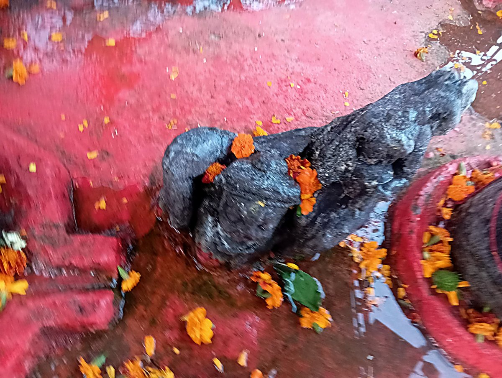

The Broken Garuda Murti

At the Jyeshtha shrine on Gopadri hill, I found a carving set into a step someone keeps freshly painted red, marigolds tucked into whatever crevices could still hold them, water or milk still slicking the stone from some recent offering. Looking at it, I had guessed I was seeing a family, a father, mother, and child seated close together, worn down by nothing more than ordinary time. The pandit ji I spoke with afterward corrected me, and what he told me changed the carving entirely.
What survives, he said, is Garuda, lifting Mata Lakshmi and Narayan, not a family scene at all but a single act of devoted carrying, the vehicle bearing the god and goddess he serves. The rest of the story, as he told it, was harder to hear than the correction itself. This image, he said, had been deliberately broken during the reign of Aurangzeb, one casualty among the many this valley's temples absorbed in that period by his account, and it resurfaced only when the spring at the shrine was itself excavated and widened, pulled back up out of the very ground it had been struck down into. Whatever was taken off it then has never been recovered, at least not that he told me of. The stone that came back up out of that spring is, in that sense, still missing most of itself.
And yet someone has gone on offering marigolds to it anyway, tucking them directly into the gaps where the carving was broken away, as though incompleteness were no obstacle at all to reverence, only one more fact about the god being worshipped. I asked why this was so, since I knew that a broken idol is ordinarily given visarjan, offered to a river or a lake so that it can rest rather than be kept on in its damaged state. This Garuda murti, the pandit ji told me, had been deliberately set apart from that custom. A broken murti is usually retired, but this one, in his telling, represents something visarjan is not meant to hold: centuries of faith in the divinity described across the Puranas, the Vedas, and the Tantras, faith that predates whatever struck this particular stone. Its very brokenness, as he put it, is itself the record, standing for a period, in his account, when the valley's temples were deliberately crushed under Muslim rule, its survival through that, buried, broken, and finally recovered from the spring, now calling a pilgrim's attention back to the glory it once represented. A murti like this cannot be replaced, and even a replica of it would be difficult to make faithfully. It is kept exactly as it is, not despite the breaking, but because of it.
I had walked up to that stone thinking I was looking at a family worn away by ordinary time. I walked away from the pandit ji's account understanding I had actually been looking at survival, a god who lost pieces of himself to a ruler's iconoclasm and gained, in exchange, some centuries buried in a spring, and who is still, missing portions and all, being garlanded exactly as though none of that had happened to him at all, kept whole in memory precisely by being left broken in stone.
I learned, too, what is intended for the broken Garuda murti going forward, and it struck me as the right kind of caution. He plans to move it to a safe place, somewhere devotees can still see it and carry away whatever they came for by looking at it, but no longer touch it with the milk and water and flowers that have been offered to it all this time. The very devotion that had kept it garlanded for so long is, after all, its own slow kind of wear, and a stone that has already survived one deliberate destruction should not, he seems to feel, be worn down a second time by the very people trying to honour it. What is left of the Garuda will go on being seen. It will simply no longer be touched.
Standing before it, and in the effort it took me to understand what I was actually looking at, something in me shifted that I do not think will shift back. I want, now, to keep looking at pieces like this one with that same deep interest, to keep asking after the stories behind their construction and behind whatever destruction they managed to survive, because it is those stories, and not the smooth unbroken stone I first imagined I was seeing, that carry the truth hidden beneath these structures. A whole idol would have told me nothing I had to work for. It was the breaking, and the account of it, that made me look properly at all.
The history of the murti given here is the pandit ji’s oral account at the shrine, recorded as he told it.
— Manoj Bhat